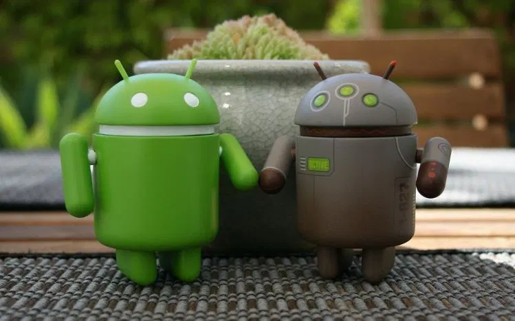

Hay guys, Bertemu lagi nih. Terimakasih loh sudah mau mampir ke website saya. Sudah merelakan waktu anda untuk berkunjung kemari. Untuk anda yang hobinya dunia maya, ini nih pas banget tempat untuk menimba ilmu. Tempat yang cocok untuk kalian. Semua informasi saya menyediakannya di sini, dan itu kusus untuk anda.

Android merupakan salah satu sistem operasi atau operating system berbasis mobile yang sangat banyak di gunakan sekarang ini. Utamanya pada telepon pintar (smartphone) ataupun tablet.
Sejak diperkenalkan pada tahun 2007, Android mempunyai beberapa varian atau versi. yang terbaru adalah versi OS Android 10 yang diperkenalkan pada 29 Agustus 2019 lalu.
Nama versi kali ini berbeda dengan sebelumnya yang biasa mengunakan nama-nama makanan penutup, seperti cupcake, nougat, donut dll. Kedepan SO ini hanya akan mengeluarkan nama versi berdasarkan urutan angka, yakni versi android 10, 11, 12 dan seterusnya.
- Pengertian Android
- Sejarah Android
- Masa Kejayaan Android
- Kelebihan dan Kekurangan Android
- Kelebihan Android
- Merupakan Sistem Operasi Open Source
- Harganya Beragam
- Memiliki Banyak Dukungan Aplikasi
- Mudah dimodifikasi
- Kekurangan Android
- Kerja sistemnya cukup berat
- Hasil modifikasi sering menyebabkan sistem bekerja tidak stabil dan kurang optimal
- Kurang responsif jika disandingkan dengan spesifikasi hardware yang tidak baik
- Perkembangan Android
- Astro 1.0
- Bender 1.1
- Cupcake 1.5
- Donut 1.6
- Eclair 2.0 – 2.1
- Froyo 2.2
- Gingerbread 2.3
- Honeycomb 3.0/3.1
- Ice Cream Sandwich 4.0
- Jelly Bean 4,1/4.2/4.3
- KitKat 4.4
- Lollipop 5.0
- Marshmallow 6.0
- Nougat 7.0
- Oreo 8.0
- Pie 9.0
Android adalah sistem operasi yang dirancang oleh Google dengan basis kernel Linux untuk mendukung kinerja perangkat elektronik layar sentuh, seperti tablet atau smartphone. Jadi, android digunakan dengan sentuhan, gesekan ataupun ketukan pada layar gadget anda.
Android bersifat open source atau bebas digunakan, dimodifikasi, diperbaiki dan didistribusikan oleh para pembuat ataupun pengembang perangkat lunak. Dengan sifat open source perusahaan teknologi bebas menggunakan OS ini diperangkatnya tanpa lisensi alias gratis.
Begitupun dengan para pembuat aplikasi, mereka bebas membuat aplikasi dengan kode-kode sumber yang dikeluarkan google. Dengan seperti itu android memiliki jutaan support aplikasi gratis/berbayar yang dapat diunduh melalui google play.
Di awal pembuatannya, Android ditargetkan bagi penggunaan perangkat kamera digital. Akan tetapi, para pencipta Android, yaitu Andy Rubin, Chris White, dan Nick Sears berpendapat bahwa pasar untuk kamera digital tidak terlalu besar.
Maka dari itu, sistem operasi ini kemudian dialihkan penggunaannya pada ponsel pintar. Pada tahun 2004, Android mulai dipasarkan dan berhadapan dengan saingan smartphone berbasis sistem operasi Symbian dan Windows Mobile. Di awal pemasarannya ini, Andy Rubin dan partner-nya sulit mendapatkan investor.
Hingga akhirnya, Android berhasil mendapatkan suntikan dana sebesar 10.000 dolar Amerika dari Steve Perlman, seseorang yang kala itu ingin membantu Andy Rubin. Di bulan Juli 2005, Google mengakuisisi Android Inc. dengan uang sebesar 50 juta dolar.
Para pendiri Android kemudian bergabung dengan Google dan memimpin proyek ini. Setelah Google akhirnya berkompetisi juga dalam perangkat ponsel pintar yang dibelinya, yaitu Android, Google akhirnya membuat prototipe.
Prototipe tersebut merupakan smartphone yang memiliki keyboard, seperti mililk Blackberry. Hingga Desember 2006, berita mengenai prototipe Android ini terus tersiar. Tanpa disangka-sangka, pada tahun 2007, perusahaan Apple merilis iPhone dengan desain smartphone yang hampir seluruh permukaannya menggunakan layar sentuh.
Mulai dari situ, Google memikirkan bagaimana perkembangan smartphone Android untuk ke depannya, mengingat prototipe awalnya menggunakan keyboard tanpa layar sentuh sama sekali.
Untuk menyaingi iPhone, Nokia dan Balckberry merilis ponsel dengan layar sentuh di tahun 2008. Tak ingin kalah dengan kompetitornya, Google juga merilis ponsel dengan layar sentuh, yaitu HTC Dream atau T-Mobile G1. Namun, tak hanya layar sentuh saja, smartphone ini juga tidak meninggalkan penggunaan keyboard.
Menurut data dari Kleiner Perkins, tahun 2010 adalah tahun di mana Android untuk pertama kalinya mengambil alih pangsa pasar yang sebelumnya dikuasai Apple dan iPhone-nya, dan terus berlanjut hingga sekarang.Alasan iPhone bisa kalah dari Android adalah karena ketersediaan smartphone dan harganya. Ketersediaan smartphone Android bisa memenuhi kebutuhan pasar karena sistem operasi ini merupakan sistem operasi Open Source.
Selain difavoritkan banyak pengguna smartphone, Android juga tidak luput dari kekurangan. Simak kelebihan dan kekurangan Android leat informasi berikut ini:
Siapa saja bisa menggunakannya secara gratis. Para developer atau pengembang dimudahkan untuk mengoptimalkan dan mengembangkan OS ini untuk smartphone yang dibuatnya.
Ada yang terbilang cukup terjangkau, ada pula yang memiliki harga jual tinggi. Sehingga, smartphone Android bisa menjangkau semua kalangan. Namun, semakin tinggi harga, semakin mumpuni pula spesifikasinya.
Hal ini juga tidak lepas dari sifat Android yang merupakan sistem operasi Open Source. Pengembang pun diizinkan untuk mengembangkan aplikasi berbasis source code dari Android. Oleh karena itu, jika Anda masuk ke Play Store, akan ditemukan banyak sekali ribuan aplikasi yang sesuai dengan kebutuhan pengguna.
Banyak komponen yang bisa Anda atur ulang atau dimodifikasi, mulai dari ROM hinga custom overclock pada sistem operasi. Hal ini bisa berpengaruh terhadap performa ponsel pintar berbasis Android agar bisa bekerja lebih cepat dan sesuai dengan keinginan.
Hal ini menyebabkan banyak memori yang dibutuhkan, baik RAM maupun ROM. Bagi smartphone yang memiliki RAM dan ROM berkapasitas kecil, tentunya akan menghambat performanya.
Adakalanya hasil modifikasi mengakibatkan OS menjadi sedikit lelet dan kurang responsif. Nantinya, bisa berpengaruh pada hardware sehingga menjadi cepat panas dan kapasitas memori lebih mudah bocor.
Hal tersebut berkaitan dengan kapasitas RAM, ROM, dan kecepatan prosesor yang digunakan pada smartphone.
Sejak tahun 2009, Android mulai dikembangakn dengan kode yang dinamai berdasarkan makanan pencuci mulut. Tiap versi dirilis sesuai dengan urutan abjad. Berikut adalah informasi lengkapnya.
Versi ini pertama kali dirilis pada 23 September 2008 yang awalnya akan dinamai dengan nama “Astro” saja. Namun karena alasan hak cipta dan trademark, nama ini tidak jadi disematkan pada versi pertama ini. Versi Astro 1.0 pertama kali digunakan oleh smartphone HTC Dream.
Bender 1.1 dirilis pada 9 Februari 2009. Lagi-lagi, versi dari OS ini mengalami masalah penamaan yang serupa dengan versi sebelumnya. Awalnya, versi ini diberi nama Bender dan dirilis untuk perangkat T-Mobile G1 saja.
Cupcake 1.5 dirilis pada 30 April 2009. Dimulai dari versi ini, penamaan menggunakan nama makanan pencuci mulut. Karena merupakan versi ketiga, makan penamaannya dimulai dengan huruf “C” dan “Cupcake” menjadi nama resminya.
Versi yang dirilis pada 15 September 2009 ini memiliki peningkatan pada fitur pencarian dan UI yang lebih user friendly. Donut 1.6 sudah mendukung teknologi CDMA/EVDO, 802.1 x, VPNs.
Eclair 2.0 – 2.1 dirilis pada 3 Desember 2009 dan untuk pertama kalinya membawa fitur baru, yaitu Google Maps yang dapat membantu pengguna dalam bepergian.
Froyo atau disingkat dari frozen yoghurt merupakan versi Android yang rilis pada 20 Mei 2010. Perubahan umumnya antara lain adalah adanya dukungan Adobe Flash 10.1, kecepatan kinerja, intergrasi V8 JavaScript engine, pemasangan aplikasi dalam SD Card, kemampuan Wi-Fi Hotspot portable, dan kemampuan auto update dalam aplikasi Android Market.
Versi ini dirilis pada 6 Desember 2010 dan terdapat perubahan dalam peningkatan kemampuan gaming, peningkatan fungsi copy paste, User Interface, dukungan format video VP8 dan WebM, hingga dukungan jumlah kamera lebih dari satu.
Versi yang diluncurkan pada 22 Februari 2011 ini merupakan OS yang didesain khusus untuk pengoptimalan penggunaan pada tablet PC. Versi Honeycomb ini juga mendukung multi prosesor dan akselerasi hardware untuk grafis.
Ice Cream Sandwich 4.0 diluncurkan tanggal 19 Oktober 2011 dan membawa fitur Honeycomb untuk smartphone dengan membawa fitur brau, seperti membuka kunci dengan pengenala wajah, perangkat tambahan fotografi, hingga berbagi informasi menggunakan NFC.
Di tahun 2012, android mengeluarkan versi Jelly Bean. Lewat versi Jelly Bean (4.1) Google mulai menerapkan teknologi asisten digital Google Now yang bisa diakses langsung dari homescreen. Pada versi 4.2 terdapat fitur photo sphere untuk panorama, daydream sebagai screensaver, power control, dsb. Sedangkan versi 4.3 merupakan pembaharuan dari versi sebelumnya.
KitKat 4.4 diluncurkan pada 3 September 2013. Versi yang sebelumnya bernama Key Lime Pie ini membawa peningkatan yang cukup signifikan karena Google lebih fokus meningkatkan user experience. Versi ini dioptimalkan untuk berjalan pada rentang yang lebih besar dari versi Android sebelumnya. Disarankan perangkat harus memiliki minimal RAM 512 MB.
Versi yang diluncurkan pada 12 November 2014 ini tersedia secara resmi melalui over the air (OTA). Perubahan yang paling menonjol dalam versi ini adalah User Interface yang didesain ulang dan dibangun dengan “material design”.
Sistem operasi ini membawa banyak fitur canggih, mulai dari Doze untuk menghemat baterai, dukungan USB tipe C, percobaan multi window, sensor sidik jari untuk buka kunci layar, hingga pengguna bisa memakai dua aplikasi berbeda dalam satu layat.
Versi ini merupakan salah satu upgrade terbesar dalam sistem operasi Android. Nougat 7.0 merupakan pengembangan dari Marshmallow yang meningkatkan performa dan interface yang lebih intuitif.
Orea 8.0 dirilis pada 2017 dengan menambah lebih banyak fitur multi tasking dan perombakan bagian notifikasi. Pengguna bisa mengatur mana saja notifikasi yang ingin ditampilkan. Tampilan UI-nya juga lebih rapi dan segar, serta difokuskan untuk memudahkan pengguna mengakses aplikasi dan mencari informasi.
Versi yang diluncurkan pada Agustus 2018 ini mengganti tiga tombol navigasi dengan tombol tunggal berbentuk elips. Android Pie disokong dengan kemampuan kecerdasan buatan (AI) yang menjadikannya bisa mempelajari pola penggunaan secara otomatis.
Nah, itu dia guys informasi yang bisa saya berikan kepada kalian tentang Sejarah, Kelebihan & Versi Sistem Operasi Android dalam kesempatan kali ini. Semoga tautan ini bermanfaat bagi kalian semua. Dan yang sudah berkunjung ke Day-Dt semoga selalu di mudahkan dalam urusannya masing - masing. Oke!
Ok Guys Terimakasih atas kunjungannya ke website kami. Semoga website ini dapat membantu kalian semua dan terimakasih atas kunjungannya website ini menjadi lebih berguna lagi jika kalian tetap menjadi view kami. Jangan Pernah Bosan Untuk Berkunjung Kembali.